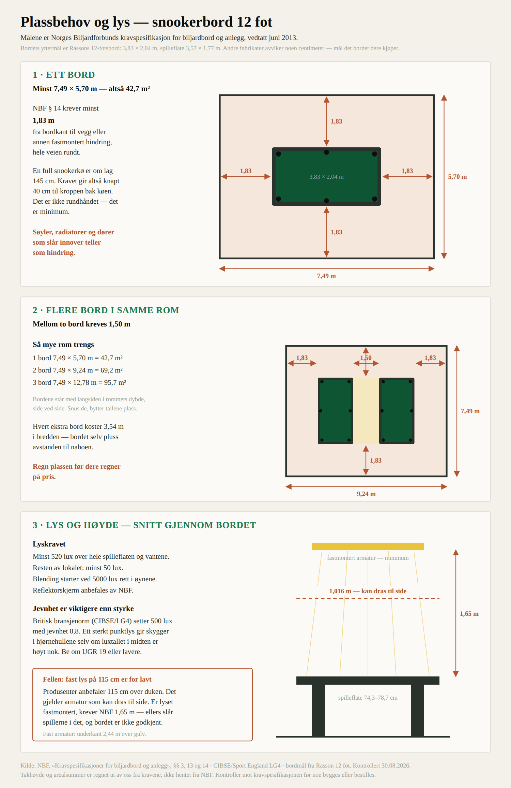
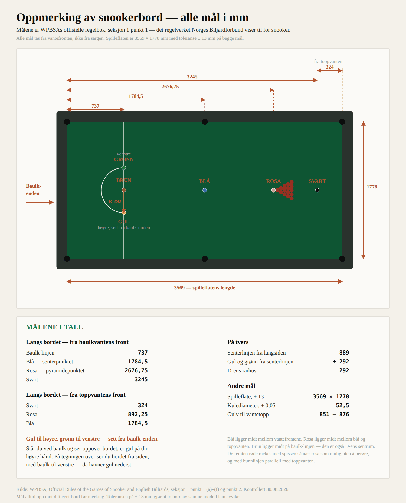

Alle krav under er NBFs egne, fra Kravspesifikasjoner for biljardbord og anlegg, vedtatt juni 2013. Arealsummene og takhøydene er regnet ut herfra av oss — de står ikke i kravspesifikasjonen selv, og skal kontrolleres mot den før noe bygges.

Bordets yttermål, 12 fot: 3,83 × 2,04 m. Tallet er Rassons, oppgitt av Spelbord.se. Andre fabrikater avviker med noen centimeter — mål det bordet klubben faktisk kjøper.
NBF § 14:
Norges Biljardforbund sitt minstekrav til avstand er 1,83 m i horisontal linje ut fra biljardbordets yttersider til vegg eller annen fastmontert hindring. Avstand mellom biljardbord og biljardbord må være minimum 1,50 m.
| Antall bord | Rommet må være minst | Areal |
|---|---|---|
| 1 | 7,49 × 5,70 m | 42,7 m² |
| 2 | 7,49 × 9,24 m | 69,2 m² |
| 3 | 7,49 × 12,78 m | 95,7 m² |
Bordene stilt side ved side med kortsidene mot samme vegg. Snus de, bytter tallene plass.
Hvorfor 1,83 m ikke er rundhåndet: en full snookerkø er om lag 145 cm. Kravet gir knapt 40 cm til kroppen bak køen. Det er et minimum, ikke en komfort.
Søyler, radiatorer, dører som slår innover, ventilasjonskanaler, brannslanger og faste benker teller. Et rom som måler riktig på gulvplanet kan likevel ikke godkjennes.
| Spilleflatens høyde (§ 3) | 74,3–78,7 cm |
|---|---|
| Fastmontert armatur, minimum over spilleflaten (§ 13) | 1,65 m |
| Armatur som kan dras til side av dommer (§ 13) | 1,016 m |
Regnet ut fra dette, med spilleflate på 79 cm: underkant av fast armatur må ligge minst 2,44 m over gulv. Legg til armaturens egen høyde og oppheng, og rommet trenger i praksis rundt 2,6–2,8 m under taket.
Produsenter av snookerarmatur anbefaler ofte 115 cm over duken. Det tallet gjelder armatur som kan dras til side, eller perimeterløsninger.
Henger klubben en fast LED-bjelke på 115 cm, er den under NBFs krav. Spillerne slår i armaturen når de strekker seg over bordet, og bordet er ikke godkjent for organisert turneringsspill.
Fast lys: 1,65 m. Flyttbart: 1,016 m. Velg først hvilken type, så høyden.
NBF § 13:
Britisk bransjenorm (CIBSE og Sport England LG4, for breddenivå): 500 lux med jevnhet 0,8. Jevnhet er forholdet mellom laveste og gjennomsnittlige lysnivå.
Et sterkt punktlys kan gi 800 lux midt på bordet og likevel gi skygge i hjørnehullene. Det er skyggene som ødelegger spillet, ikke luxtallet i midten.
Ved innhenting av tilbud: be om 520 lux og jevnhet 0,8, ikke bare watt. Be også om UGR 19 eller lavere — UGR er målet på blendingsubehag, og 19 er nivået man krever ved dataarbeid.
Det finnes billige LED-armaturer for biljardbord fra kinesiske produsenter. På Alibaba oppgis priser fra rundt 12,80 USD og oppover, med effekt fra 30 til 120 W, Ra90 fargegjengivelse, 50 000 timers levetid, 110–240 V, og minsteordre helt ned til én enhet.
Men to forbehold, og de er ikke formaliteter:
Størrelsen finnes knapt. Utvalget er dominert av 4 til 8 fot — altså pool. Armatur beregnet på 12 fot er ikke framtredende i det billige segmentet. Et snookerbord er dobbelt så langt som et engelsk poolbord, og en armatur som gir jevnt lys over 3,57 m er et annet produkt enn en som dekker 1,8 m.
Elsikkerhet er ikke et sted å spare. En armatur i et klubblokale er en fast installasjon i et forsamlingslokale, ikke en lampe i en stue.
Vi gir ikke råd om dette. Spør en registrert elvirksomhet og forsikrings- selskapet før klubben bestiller. Prisforskjellen mot et dokumentert produkt er liten sammenlignet med det som står på spill.
Det som derimot er trygt å hente billig: kuler, jern, børste, trekant og annet løst tilbehør. Til sammenligning tar Dynamic Billard €235 for et sett Aramith Tournament Champion snookerkuler og €199 for snookerjern.

Kilde: WPBSAs offisielle regelbok, seksjon 1 punkt 1. Det er det regelverket NBF viser til for snooker — NBFs egen kravspesifikasjon fra 2013 er skrevet for pool og har ingen mål for 12-fotsbord.
Merk at NBFs § 7 oppgir kulediameter 57,2 mm. Det er poolkula. **Snookerkula er 52,5 mm**, og det er WPBSAs tall som gjelder på et snookerbord.
| mm | |
|---|---|
| Baulk-linjen | 737 |
| Blå — senterpunktet | 1784,5 |
| Rosa — pyramidepunktet | 2676,75 |
| Svart | 3245 |
| mm | |
|---|---|
| Svart | 324 |
| Rosa | 892,25 |
| Blå | 1784,5 |
| mm | |
|---|---|
| Senterlinjen fra langsiden | 889 |
| D-ens radius | 292 |
| Gul og grønn fra senterlinjen | ± 292 |
Bare to av målene er oppgitt direkte i regelboka — 737 mm til baulk-linjen og 324 mm til svart. Resten følger av definisjoner:
Spilleflaten har toleranse ± 13 mm på begge mål. To bord av samme modell kan avvike. Målene for blå og rosa er avledet av bordets faktiske lengde, så på et bord som er 10 mm kort, flytter de seg.
737 og 324 er absolutte. De øvrige er relative. Mål opp bordet først.
| Spilleflate innenfor vantefrontene | 3569 × 1778 mm, ± 13 mm |
|---|---|
| Kulediameter | 52,5 mm, ± 0,05 mm |
| Gulv til vantetopp | 851–876 mm |
Tegningen genereres av `verktoy/lag_oppmerkingstegning.py`. Endres et mål, endres det i skriptet — ikke i SVG-fila.
Koalisjonen · Leverandorer-bord-og-duk · Snooker MOC